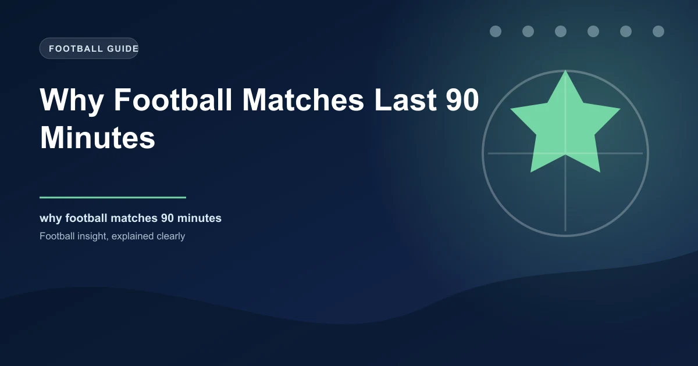

Every football fan knows the number. Ninety minutes. Two halves of 45. A 15-minute break in between. It is one of the most fundamental facts about the sport, so deeply embedded in the culture that it feels as though it must have existed since the very beginning. But the 90-minute match was not inevitable. It was a rule created at a specific moment in history, for specific reasons, and it could easily have been something else entirely.
The story of why football matches last 90 minutes begins in the mid-19th century, when the sport had no fixed length at all. Before the rule existed, matches could last for hours, or end the moment a goal was scored. The idea that every match should have a defined duration was revolutionary, and the number that was chosen reveals as much about Victorian attitudes to sport as it does about the game itself.
Before the 1860s, football was chaos. There was no standardised set of rules across England, let alone a fixed match duration. Different schools, clubs, and regions played by different rules, and time was one of the most variable elements. Some matches were played until one side scored a set number of goals. Others continued until both teams agreed to stop, which could mean anything from 30 minutes to several hours.
The Cambridge Rules of 1863, one of the earliest attempts to standardise the game, did not specify a time limit at all. Matches at Cambridge University were played without a clock. The game ended when the light faded, when the players were exhausted, or when someone decided enough was enough. This meant that a match between two evenly matched teams could stretch on indefinitely, with players becoming increasingly fatigued and the quality of play deteriorating as the hours wore on.
The Sheffield Rules, introduced in 1857 by the Sheffield Football Club, were among the first to suggest a time limit. The original Sheffield Rules stated that matches should be played in two halves, with a break in the middle, but the exact duration was left to the discretion of the teams. This was a step towards the modern format, but it still left enormous room for inconsistency. A match between two teams that wanted a quick game might last 60 minutes. A match between two teams that wanted a thorough contest could last well over two hours.
The lack of a fixed duration was not just inconvenient. It was a competitive problem. Teams could use the absence of time limits to their advantage, playing on for hours when they were ahead and demanding to stop when they were behind. Without a clock, there was no fair way to determine when a match should end.
The Football Association, founded in 1863, spent its early years focused on other aspects of the game: the size of the pitch, the rules for fouls, and the question of whether handling the ball should be permitted. But by 1866, the question of match duration could no longer be ignored. Matches were being played at wildly different lengths, and the FA recognised that standardisation was essential for the sport to develop.
The rule that emerged was specific and unambiguous: matches would be played in two halves of 45 minutes each, with a 10-minute interval between them. This gave a total match duration of 90 minutes, plus the break. The FA chose 45 minutes per half for reasons that were partly practical and partly arbitrary. The light in England during the winter months, when most football was played, limited how long outdoor sport could reasonably continue. Four-and-a-half hours of total playing time (two halves) was long enough to produce a meaningful contest but short enough to finish before dark.
There was also a practical consideration related to the equipment of the time. Referees used pocket watches to keep time, and the precision of these watches was limited. A 45-minute half was long enough that minor inaccuracies in timekeeping would not significantly affect the outcome of the match, while short enough that a referee could reasonably track the elapsed time without a scoreboard or timer display.
The 1866 rule stated that each half of the match would consist of 45 minutes of play, with a 10-minute interval between halves. The referee was designated as the official timekeeper, and their pocket watch became the definitive source of match time. This rule was adopted by the FA and became the foundation for the modern 90-minute match.
The 10-minute interval was also significant. It gave players time to rest, recover, and receive basic treatment for injuries. In an era when substitutes did not exist and medical support was minimal, the interval was the only opportunity for players to recover from knocks and fatigue. It was a compromise between the desire for continuous play and the physical limitations of the athletes.
The 90-minute match was established in England by 1866, but it took nearly four decades for the rule to become universal. When FIFA was founded in 1904, one of its first acts was to standardise the Laws of the Game for international competition. The 90-minute match, with two halves of 45 minutes, was adopted as the official format for all FIFA-sanctioned matches.
This was not a simple copy-and-paste from the English FA. Different countries had developed their own variations. Some leagues in South America played matches of 80 minutes. Some in continental Europe used 50-minute halves. The FA's 90-minute format was chosen because it was the most widely adopted and because the English FA was the most influential football association at the time. England had invented the modern game, and their rules carried weight.
FIFA's adoption of the 90-minute format in 1904 also established the referee as the official timekeeper for all international matches. The referee's watch became the final authority on match time, a tradition that continues to this day. Even with modern technology, electronic boards, and VAR, the referee's watch remains the definitive clock.
In the early days of football, the referee was sometimes called the "timekeeper" because their primary responsibility was to watch the clock and signal the end of each half. The final whistle was known as "time," and the phrase "the referee's watch is the final authority" was written into the Laws of the Game. This tradition persists today, even though the referee now has additional support from fourth officials and electronic timing systems.
By the 1920s, virtually every professional league in the world had adopted the 90-minute format. The rule was no longer controversial. It was simply how football worked. But the story of match duration was not over. The next chapter would involve something that the original rule-makers had not anticipated: time-wasting.
The 90-minute rule was simple in theory but complicated in practice. If a match was supposed to last 90 minutes, what happened when time was lost to injuries, substitutions, or deliberate time-wasting? For decades, the answer was nothing. Referees kept time with their pocket watches, and if a few minutes were lost to a lengthy injury stoppage, those minutes were simply gone. The match ended at 90 minutes regardless of how much time had been lost.
This created a significant competitive imbalance. Teams that were leading had every incentive to waste time: taking long over goal kicks, feigning injuries, and arguing with the referee. Every minute lost was a minute closer to victory. Teams that were trailing had no recourse. The clock kept ticking, and the lost time was never recovered.
Added time, or stoppage time, was introduced in the 1960s to address this problem. The concept was straightforward: at the end of each half, the referee would add additional minutes to compensate for time lost during the half. The amount of added time was at the referee's discretion, and it was displayed on a simple board held up by the fourth official. For the first time, the 90-minute match was not a fixed duration but a minimum.
The introduction of added time changed the dynamics of football in profound ways. Teams could no longer assume that the clock would run out at exactly 90 minutes. A match that was supposed to end at 45 minutes plus stoppage time might continue for 47, 48, or even 50 minutes. This added a layer of uncertainty that made the final minutes of close matches even more dramatic.
Dramatic finishes — Matches that would have ended at 90 minutes now continued for additional minutes, creating some of the most memorable moments in football history. Last-minute goals, last-ditch defending, and dramatic comebacks became more common.
Tactical shifts — Managers began to factor added time into their tactics. A team chasing a goal in the 88th minute knew that they might have five or six additional minutes to find an equaliser, which influenced substitution decisions and formation changes.
Psychological pressure — The uncertainty of added time created psychological pressure on both teams. Leading teams could not relax until the final whistle, while trailing teams had hope for longer than the clock suggested.
Added time was initially modest, typically one to three minutes per half. But as football became more professional and the financial stakes of results increased, time-wasting became more sophisticated, and the amount of added time began to grow.
The most significant changes to how 90 minutes is played in the modern era came at the two most recent World Cups. At the 2018 World Cup in Russia, FIFA introduced the fourth official's electronic board showing the minimum amount of added time. This was a visual and psychological shift. For the first time, fans, players, and managers could see exactly how many additional minutes would be played, removing the uncertainty that had surrounded added time for decades.
The 2022 World Cup in Qatar went further. FIFA changed the policy from "minimum added time" to "total time shown." Under the old system, the referee would signal a minimum of, say, five minutes, but the half could continue beyond that if further stoppages occurred. Under the new system, the board showed the total additional time that would be played, giving everyone a precise understanding of when the half would end.
This change was driven by a desire to combat time-wasting and to ensure that the full 90 minutes of actual football was played. Studies consistently show that the actual ball-in-play time in a 90-minute match averages only 55 to 60 minutes. That means fans are watching 30 to 35 minutes of non-play: throw-ins, goal kicks, free kicks, celebrations, injuries, and substitutions. FIFA's new timing policy was designed to maximise the amount of actual football.
The results were dramatic. At the 2022 World Cup, several matches featured 10 or more minutes of added time, a figure that would have been unthinkable just a few years earlier. The England vs Iran group stage match included 14 minutes of added time in the first half alone. These extended stoppage periods were controversial but effective in ensuring that the full 90 minutes of football was played.
The 90-minute match has been the standard for over 150 years, but the actual content of those 90 minutes varies enormously. The table below shows the breakdown of time in a typical professional football match:
| Time Category | Average Duration | Percentage of 90 Minutes |
|---|---|---|
| Ball in play | 55-60 minutes | 61-67% |
| Stoppages (throw-ins, free kicks, goal kicks) | 15-20 minutes | 17-22% |
| Substitutions and injuries | 5-8 minutes | 6-9% |
| Goal celebrations and restarts | 3-5 minutes | 3-6% |
| Half-time interval | 15 minutes (not counted) | N/A |
These numbers reveal a surprising truth about football: for all the emphasis on the 90-minute duration, the actual time the ball is in play is barely more than an hour. This has led to ongoing debates about whether the 90-minute format is the most efficient way to present the sport.
The International Football Association Board (IFAB) has experimented with alternative formats. In pilot programmes, IFAB has tested 60-minute matches with a running clock that stops every time the ball goes out of play, eliminating time-wasting entirely. MLS (Major League Soccer in the United States) briefly experimented with 35-minute halves in certain contexts. These experiments suggest that the 90-minute format is not sacred, even if it remains the dominant standard. The IFAB's pilot programme has shown that a shorter, more intense format can produce the same amount of ball-in-play time as a traditional 90-minute match.
However, changing the 90-minute format would require a fundamental shift in football's culture, broadcasting contracts, and commercial structures. The 90-minute match is deeply embedded in the way the sport is marketed, consumed, and understood. Any change would face enormous resistance from fans, broadcasters, and governing bodies alike.
In knockout competitions, where a winner must be determined on the day, the 90-minute match is not always sufficient. When scores are level at the end of normal time, the match enters extra time: two additional halves of 15 minutes each, for a total of 30 minutes. This takes the total match duration to 120 minutes, making it one of the longest continuous sporting events in professional sport.
Extra time has its own unique dynamics. Fatigue becomes a decisive factor, and managers often save their most impactful substitutes for this period. The psychological pressure intensifies, as every attack could be the one that decides the match. Extra time has produced some of the most dramatic moments in football history, from Geoff Hurst's hat-trick in the 1966 World Cup final to Sergio Aguero's near-miss in the 2014 World Cup semi-final.
If scores remain level after extra time, the match is decided by a penalty shootout. This is the ultimate tiebreaker, a format that was adopted in the 1970s and has become one of the most dramatic spectacles in sport. The penalty shootout is the final acknowledgement that 120 minutes of football sometimes cannot produce a winner, and that a different method of deciding the outcome is necessary.
Extra time is the exception, not the rule. The vast majority of football matches, from the Premier League to grassroots leagues, are decided within 90 minutes. Extra time is reserved for knockout competitions where a winner must be determined, and it adds 33% to the match duration. The 90-minute standard remains the foundation of the sport.
Football matches last 90 minutes because of a rule written in 1866 by the Football Association, a number that was chosen for practical reasons related to light, equipment, and the physical limitations of Victorian-era athletes. FIFA adopted the format in 1904, and it has remained the global standard for over a century.
But the 90-minute match is not a fixed point. It is a living rule that has been shaped by added time, electronic boards, VAR reviews, and FIFA's evolving timing policies. The duration has stayed the same, but the content of those 90 minutes has changed dramatically. The ball is in play for barely an hour, stoppage time has grown to unprecedented lengths, and the debate over whether the format is fit for purpose continues to evolve.
What has not changed is the emotional power of 90 minutes. The drama of a last-minute goal, the tension of added time when your team is holding on, the relief of the final whistle when victory is secured. These moments are defined by the 90-minute structure, and they would lose something if the clock ran differently. The 90-minute match is not just a rule. It is the heartbeat of the sport.
Check our free daily football predictions for every match of the season.
Generate optimized accumulator combinations from today's AI-powered predictions. Set your target odds and get instant ticket suggestions.
Pro Ticket Builder →